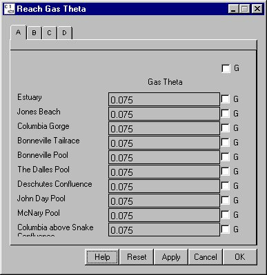

Reach Gas Theta
Selecting Reservoir Reach Gas Theta opens a window for setting the mixing parameter for dissolved gas in a specified reach. Gas Theta determines the rate of mixing between the gas levels in the left-bank and right-bank flows of the river (facing downstream). These flows often have different levels of gas upon exiting a dam and become more mixed as the river flows downstream. The mixing rate is with respect to time and is set by default to be 0.075 (mile)^-1, which leads to roughly 95% mixing after 40 miles. A value of zero for Reach Gas Theta results in no mixing between the flows and a value of 10 allows for complete mixing between the flows.
Reach Gas Theta opens a window for setting the mixing parameter for dissolved gas in a specified reach. Gas Theta determines the rate of mixing between the gas levels in the left-bank and right-bank flows of the river (facing downstream). These flows often have different levels of gas upon exiting a dam and become more mixed as the river flows downstream. The mixing rate is with respect to time and is set by default to be 0.075 (mile)^-1, which leads to roughly 95% mixing after 40 miles. A value of zero for Reach Gas Theta results in no mixing between the flows and a value of 10 allows for complete mixing between the flows.
This is a Slider Input window. Click on the letter tabs to page through the Reach list.

Reach Gas Theta window